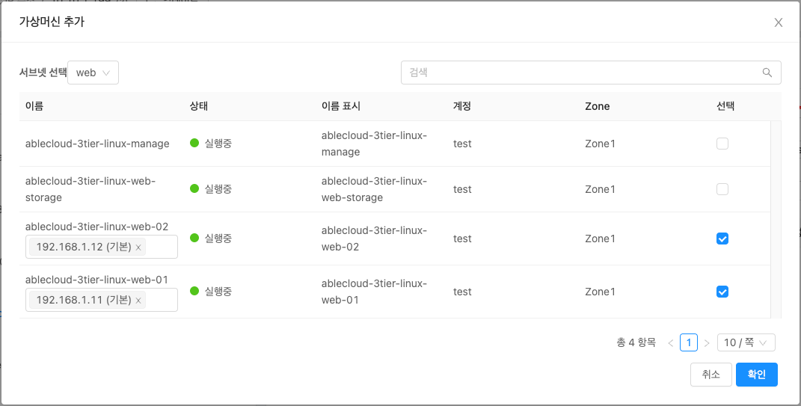

WEB 서버 구성
ABLESTACK Mold를 이용한 이중화를 통한 고가용성 기능을 제공하는 리눅스 기반의 3계층 구조 의 구성 단계 중, 마지막 단계인 WEB 구성에 대한 문서입니다.
가상머신에 도커 컨테이너를 이용하여 Nginx를 활용한 WEB서버 2개를 구성하고 1 개의 가상머신에 NFS 스토리지를 생성하여 WEB에서 구동시킬 웹소스를 저장, 공유합니다. 이를 하나의 클러스터로 구성하는 방법은 다음과 같은 절차로 수행됩니다.
- Affinity 그룹 생성
- 가상머신 생성
- 데이터 디스크 설정
- 보안 설정
- NFS 스토리지 가상머신 구성
- WEB 가상머신 구성
- 로드 밸런서(부하 분산) 설정
Affinity 그룹 생성¶
가상머신을 생성하기 전, Anti Affinity 그룹을 생성하여 어느하나의 서브넷에 속한 가상머신들이 특정 호스트 한 곳에 몰려 실행하도록 하거나 반대로 몰려 실행되지 않도록 합니다. 이중화를 위해 Affinity 그룹을 anti-affinity 유형으로 WEB, WAS, DB 각각 추가해야합니다. 이를 위해 컴퓨트 > Affinity 그룹 화면으로 이동하여 새 Affinity 그룹 추가 버튼을 클릭합니다. 클릭하게되면 다음과 같은 입력항목을 확인할 수 있습니다.
{kind=link}
- 이름 : 서브넷을 분별할 수 있는 Affinity 그룹 이름을 입력합니다.
- 설명 : Affinity 그룹에 대한 설명을 입력합니다.
- 유형 : Affinity 그룹에 대한 유형을 선택합니다. Anti 여부를 선택할 수 있습니다.
새 Affinity 그룹 추가 대화상자에서의 입력 항목 예제는 다음과 같습니다.
- 이름 : ablecloud-3tier-linux-web
- 설명 : 3tiers-linux의 web 구성 시 사용되는 Affinity 그룹입니다.
- 유형 : host anti-affinity (Strict)
Affinity 그룹 유형
host anti-affinity: 가능한 한 서로 다른 호스트에 인스턴스를 배포합니다.
host affinity: 가능한 한 동일한 호스트에 인스턴스를 배포합니다.
- Non-Strict 옵션은 마지막으로 해당 가상머신을 실행했던 호스트를 고려하지 않고 가상머신을 시작합니다.
가상머신 생성¶
ABLESTACK Mold는 기본적으로 템플릿을 이용해 가상머신을 생성하고 사용하는 것을 권장합니다. 따라서 가상머신을 생성하기 전에 먼저 "가상머신 사용 준비" 단계를 통해 CentOS 기반의 가상머신 템플릿 이미지를 생성하여 등록하는 절차를 수행한 후 가상머신을 생성해야 합니다.
가상머신을 추가하기 위해 컴퓨트 > 가상머신 화면으로 이동하여 가상머신 추가 버튼을 클릭합니다. 새 가상머신 마법사 페이지가 표시됩니다. 해당 페이지에서는 템플릿을 이용한 가상머신 생성 문서를 참고하여 가상머신을 생성합니다.
템플릿을 이용한 가상머신 생성
템플릿을 이용한 가상머신 추가를 위해 템플릿을 이용한 가상머신 생성 문서를 참고하십시오.
입력 항목 예시는 다음과 같습니다.
-
WEB 가상머신 1
- 배포 인프라 선택 : Zone
- 템플릿/ISO : Rocky Linux 9.0 기본 이미지 템플릿 * Rocky Linux release 9.0 (Blue Onyx)
- 컴퓨트 오퍼링 : 1C-2GB-RBD-HA
- 데이터 디스크 : * 디폴트로 생성합니다.
- 네트워크 : web * VPC명이 일치하는지 확인합니다.
- IP: 192.168.1.11
- SSH 키 쌍 : 3tier_linux_keypair
- 확장 모드 :
- Affinity 그룹 : ablecloud-3tier-linux-web
- 이름 : ablecloud-3tier-linux-web-01
-
WEB 가상머신 2
- 배포 인프라 선택 : Zone
- 템플릿/ISO : Rocky Linux 9.0 기본 이미지 템플릿 * Rocky Linux release 9.0 (Blue Onyx)
- 컴퓨트 오퍼링 : 1C-2GB-RBD-HA
- 데이터 디스크 : * 디폴트로 생성합니다.
- 네트워크 : web * VPC명이 일치하는지 확인합니다.
- IP: 192.168.1.12
- SSH 키 쌍 : 3tier_linux_keypair
- 확장 모드 :
- Affinity 그룹 : ablecloud-3tier-linux-web
- 이름 : ablecloud-3tier-linux-web-02
-
NFS 스토리지 가상머신
- 배포 인프라 선택 : Zone
- 템플릿/ISO : Rocky Linux 9.0 기본 이미지 템플릿 * Rocky Linux release 9.0 (Blue Onyx)
- 컴퓨트 오퍼링 : 1C-2GB-RBD-HA
- 데이터 디스크 : 100GB-WB-RBD
- 네트워크 : web * VPC명이 일치하는지 확인합니다.
- IP: 192.168.1.13
- SSH 키 쌍 : 3tier_linux_keypair
- 확장 모드 : * 디폴트로 생성합니다.
- 이름 : ablecloud-3tier-linux-web-storage
스토리지 가상머신의 Affinity 그룹 적용
스토리지 가상머신의 Anti-Affinity 그룹 적용은 권장되지 않습니다. 어떠한 이유로 스토리지 가상머신을 실행 중이던 호스트가 중단될 경우, 스토리지 가상머신은 다른 호스트로 이관을 하게 되는데 이 때 Anti-Affinity가 적용되어 스토리지 가상머신이 재기동되지 않을 수 있습니다.
데이터 디스크 설정¶
안정적인 운영을 위해 기본 RootDisk가 아닌 고용량의 스펙을 가진 디스크로의 데이터 저장이 필요합니다. 이를위한 사전작업으로 가상머신 생성 시 추가했던 데이터 디스크에 대한 사용을 위해 "데이터 디스크 설정" 문서를 참고하여 수행합니다.
Note
NFS 스토리지 가상머신에만 데이터 디스크 설정을 수행합니다.
보안 설정¶
생성한 가상머신에 대해 보안 설정을 하여 허용되지 않은 접근을 차단하고 필요한 서비스만 운영할 수 있도록 설정합니다.
Note
WEB 가상머신 1, 2 및 스토리지 가상머신에 대해 실행 및 설정을 적용합니다.
네트워크 방화벽 해제¶
방화벽은 들어오고 나가는 네트워크 트래픽을 모니터링하고 필터링하는 방법입니다. 특정 트래픽을 허용할지 차단할지 결정하는 일련의 보안 규칙을 정의하여 작동합니다. CentOS 운영체제에서는 firewald라는 이름의 방화벽 데몬과 함께 해당 기능이 제공됩니다.
firewall-cmd 명령어를 이용하여 nfs, mountd, rpc-bind 서비스에 대한 방화벽을 해제하고 --permanent 옵션을 사용하여 영구적으로 적용합니다.
firewall-cmd --zone=public --permanent --add-service={nfs,mountd,rpc-bind}
firewall-cmd --reload
Info
nfs, mountd, rpc-bind 서비스는 각각 TCP 포트 2049, 20048 그리고 111을 사용합니다.
NFS 스토리지 가상머신 구성¶
NFS-Server로써 WEB 가상머신 1, 2와 데이터를 공유할 NFS 스토리지 가상머신 생성을 위해 아래 절차를 수행합니다.
Note
NFS 스토리지 가상머신에 대해 실행 및 설정을 적용합니다.
NFS Server 패키지 설치¶
패키지 관리 명령어인 dnf 를 사용하여 nfs-utils 패키지를 설치합니다.
dnf install nfs-utils
NFS 스토리지 설정¶
WEB 컨테이너와 파일을 공유할 NFS 스토리지의 공유폴더를 생성하고 적절한 권한을 부여합니다.
스토리지 공유폴더 경로 예시는 /mnt/data/nfs 입니다.
mkdir -p /mnt/data/nfs
chmod -R 777 /mnt/data/nfs
공유하려는 디렉토리와 서버 설정을 위해 모든 사용자 또는 특정 범위 IP 사용자 접근 여부를 설정합니다.
| /etc/exports | |
|---|---|
1 2 3 4 5 | |
NFS Server 시작¶
NFS Server Node의 NFS Server 서비스를 등록하고 시작합니다.
systemctl enable nfs-server.service
systemctl start nfs-server.service
NFS Server 설정 적용을 위해 윗 단계에서 설정한 /etc/exports 파일을 적용합니다.
exportfs -arv
WEB Server 가상머신 구성¶
NodeJs로 구성한 WAS 앞단에 NginX를 구성하여 Reverse Proxy로 사용합니다. 이러한 구성 방식은 성능 향상 및 보안에 이점을 가지고 있습니다. WEB 서버 구성을 위해 도커 컨테이너를 이용하여 Nginx를 구동시키고 NFS 스토리지 가상머신을 데이터 영역으로 사용할 수 있도록 구성합니다.
Note
WEB 가상머신 1, 2 가상머신에 대해 실행 및 설정을 적용합니다.
NFS 스토리지 패키지 설치¶
먼저 패키지 관리 명령어인 dnf 를 사용하여 nfs-utils와 nfs4-acl-tools 패키지를 설치합니다.
dnf install nfs-utils nfs4-acl-tools
NFS 스토리지 설정¶
NFS Server의 마운트 정보를 확인합니다.
showmount -e 192.168.1.13
NFS 디렉터리를 마운트할 로컬 마운트 경로를 생성합니다.
mkdir -p /mnt/data/mount-nfs
chmod -R 777 /mnt/data/mount-nfs
마운트가 적용되도록 합니다.
mount 192.168.1.13:/mnt/data/nfs /mnt/data/mount-nfs
추가적으로 재부팅 시 자동으로 마운트가 적용되도록 합니다.
| fstab | |
|---|---|
1 2 3 4 | |
Nginx 컨테이너 구성¶
Nginx 컨테이너 이미지를 다운로드 받습니다.
podman pull docker.io/nginx:stable
다운로드한 Nginx 컨테이너 이미지를 실행합니다.
WEB Server가 정상적으로 로드 벨런싱되는 지 확인하기 위해 WEB 가상머신의 이름에 따라 --hostname 옵션 값을 지정합니다.
podman run \
--privileged=true \
-d \
-p 6060:6000 \
--name nginx-server \
--hostname web-container-1 \
--restart always \
-v /mnt/data/mount-nfs:/usr/share/nginx/html/ \
docker.io/nginx:stable
# run: 컨테이너를 실행합니다.
# --privileged=true: 컨테이너 시스템 주요 자원에 접근할 수 있는 권한 취득
# -p: 포트포워딩 (외부:내부)
# --name: 컨테이너 이름
# --hostname: 컨테이너 호스트네임을 지정합니다.
# --restart: 컨테이너 오류 시, 항상 재시작
# -v: 컨테이너의 특정 폴더와 로컬의 폴더를 서로 공유
# docker.io/nginx:stablet: 다운로드한 이미지 이름
사용자 정의 데몬인 서비스를 생성하여 가상머신이 부팅될 때 NginX컨테이너가 자동으로 실행하도록 할 수 있습니다.
podman generate systemd nginx-server > /etc/systemd/system/nginx-server.service
systemctl enable nginx-server.service
systemctl daemon-reload
Nginx를 WAS의 Reverse Proxy로 설정하기 위해 Nginx 설정파일을 생성하고 아래 내용을 추가합니다. 하이라이트된 listen 포트와 proxy_pass 주소는 각 설정 맞게 유의하여 변경합니다.
클릭하여 Nginx의 설정정보를 확인합니다.
| /mnt/data/mount-nfs/nginx.conf | |
|---|---|
1 2 3 4 5 6 7 8 9 10 11 12 13 14 15 16 17 18 19 20 21 22 23 24 25 26 27 28 29 30 31 32 33 34 35 36 37 38 39 40 41 42 43 44 45 46 47 48 49 50 51 52 | |
실행 중인 Nginx 컨테이너 설정파일을 전 단계에서 생성한 파일로 덮어쓰기합니다.
podman cp /mnt/data/mount-nfs/nginx.conf nginx-server:/etc/nginx/nginx.conf
변경된 NginX의 설정파일 적용을 위해 컨테이너를 재시작합니다.
podman restart nginx-server
로드 밸런서(부하 분산) 설정¶
Mold 사용자 또는 관리자는 서브넷에서 수신된 트래픽을 해당 서브넷 내의 여러 가상머신간에 부하 분산되도록 규칙을 만들 수 있습니다. 예를 들어 WAS 계층에 도달한 트래픽은 해당 WEB 서브넷의 다른 가상머신으로 리디렉션됩니다. 로드 밸런서를 설정하면 Health Check를 통해 장애 여부를 판단하고 노드에 이상이 발생하면 다른 정상 동작중인 노드로 트래픽을 보내주는 Fail-over가 가능합니다.
이를 위해 먼저 구성한 VPC에 Public IP를 할당하여 외부에서 접속할 수 있도록 합니다. 네트워크 > VPC 화면으로 이동한 후, 아래 문서를 참고하여 Public IP를 할당합니다.
VPC에 대한 새 Public IP 주소 획득
- VPC에 Public IP 할당하기 위해 VPC에 대한 새 Public IP 주소 획득 문서를 참고하십시오.
할당받은 Public IP를 선택한 후 부하 분산 탭을 클릭한 후, 아래 문서를 참고하여 부하 분산을 설정합니다.
입력 항목 예시는 다음과 같습니다.
- 이름: web-lb
- Public 포트: 6060
- 사설 포트: 6060
- 전송원 CIDR: * 디폴트 값을 입력합니다.
- 알고리즘: 최소 접속
- 프로토콜: TCP
- AutoScale: 아니오
- 가상머신 추가: * 서브넷을 선택한 후, 가상머신을 선택합니다.
가상머신 추가 버튼을 클릭하고 서브넷을 선택한 후 WEB 가상머신 1,2 를 할당합니다.

{kind=link}
클라이언트 접근¶
외부 로드 밸런서 사용을 위해 할당받은 Public IP를 http://{{ publicIp }}:6060 형식으로 웹브라우저에 입력하여 정상 작동 되는지 확인합니다.